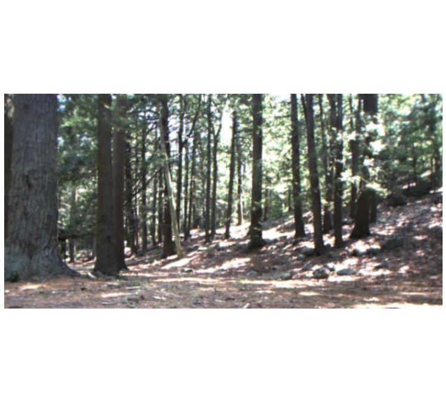

|
Meng Song
I completed my PhD at UC San Diego, where I was advised Prof. Manmohan Chandraker.
|
{kind=link}
ResearchMy research is motivated by the goal of developing a mathematical construct of the intelligent agent from first principles. My recent work has primarily focused on answering the question "What is a good representation of states and goals in decision-making problems?" I explored this problem under three different learning paradigms: reinforcement learning, imitation learning, and unsupervised learning. |
|
|
Good Actions Succeed, Bad Actions Generalize: A Case Study on Why RL Generalizes Better
Meng Song Preprint, 2025 arXiv / code PPO and BC generalize differently in visual navigation: BC imitates successful trajectories, while PPO combinatorially stitches together past experiences, including failures, to solve new tasks and achieve stronger generalization. |

|
Towards Unsupervised Goal Discovery: Learning Plannable Representations with Probabilistic World Modeling
Meng Song PhD Thesis, 2024 escholarship
Learning through interaction is a foundational principle in both human and animal learning.
In a broad sense, intelligent agents can be formulated as goal-directed systems
interacting with an uncertain environment.
|

|
Probabilistic World Modeling with Asymmetric Distance Measure
Meng Song Geometry-grounded Representation Learning and Generative Modeling Workshop at International Conference on Machine Learning (ICML) (Oral Presentation) arXiv A novel probabilistic world model trained with contrastive learning. The learned latent space enables subgoal discovery, asymmetric transition modeling, and supports highly efficient planning without requiring any inference-time search. |

|
A Minimalist Prompt for Zero-Shot Policy Learning
Meng Song Xuezhi Wang, Tanay Biradar, Yao Qin, Manmohan Chandraker Task Specification Workshop at The Robotics: Science and Systems (RSS), 2024 arXiv / code A novel prompting method that enables interpretable zero-shot generalization in unseen robotics tasks without requiring demonstrations and surpasses few-shot baselines. |

|
RLPrompt: Optimizing Discrete Text Prompts with Reinforcement Learning
Mingkai Deng*, Jianyu Wang*, Cheng-Ping Hsieh, Yihan Wang Han Guo Tianmin Shu Meng Song Eric P. Xing Zhiting Hu Conference on Empirical Methods in Natural Language Processing (EMNLP), 2022 arXiv / blog RL-based prompt optimization approach outperforms a wide range of finetuning and prompting baselines on text classification and style transfer tasks. |
|
|
Learning to Rearrange with Physics-Inspired Risk Awareness
Meng Song Yuhan Liu, Zhengqin Li, Manmohan Chandraker Conference on Risk Aware Decision Making Workshop at The Robotics: Science and Systems (RSS), 2022 arXiv / code / project page A PPO agent learns physical concepts such as mass and friction by actively interacting with the environment and mastering everyday skills, instead of passively observing physical processes. |

|
OpenRooms: An End-to-End Open Framework for Photorealistic Indoor Scene Datasets
Zhengqin Li, Ting-Wei Yu, Shen Sang, Sarah Wang, Meng Song Yuhan Liu, Yu-Ying Yeh, Rui Zhu, Nitesh Gundavarapu, Jia Shi, Sai Bi, Zexiang Xu, Hong-Xing Yu, Kalyan Sunkavalli, Miloš Hašan, Ravi Ramamoorthi, Manmohan Chandraker Conference on Computer Vision and Pattern Recognition (CVPR), 2021 (Oral Presentation) arXiv / dataset / project page A novel framework for creating large-scale photorealistic datasets of indoor scenes, enabling broad applications in inverse rendering, scene understanding, and robotics. |
|
|
S4G: Amodal Single-view Single-Shot SE(3) Grasp Detection in Cluttered Scenes
Yuzhe Qin, Rui Chen, Hao Zhu, Meng Song Jing Xu, Hao Su Conference on Robot Learning (CoRL), 2019 (Spotlight Presentation) arXiv A novel 6-DoF grasp detection method using a single-shot grasp proposal network trained on automatically generated synthetic data, significantly outperforming state-of-the-art methods. |
|
|
Automatic Recovery of Networks of Thin Structures
Meng Song Daniel Huber International Conference on 3D Vision (3DV), 2015 (Oral Presentation) paper A novel geometric approach that automatically segments and parses a complex network of thin structures from low-quality 3D point clouds. |
|

|
Natural Feature based Localization in Forested Environments
Meng Song Fengchi Sun Karl Iagnemma International Conference on Intelligent Robots and Systems (IROS), 2012 (Oral Presentation) paper A novel geometric approach for extracting and modeling tree trunk landmarks from noisy 3D point clouds of cluttered forested environments. |
|
|
Natural Landmark Extraction in Cluttered Forested Environments
Meng Song Fengchi Sun Karl Iagnemma International Conference on Robotics and Automation (ICRA), 2012 (Oral Presentation) paper A novel geometric approach for extracting and modeling tree trunk landmarks from noisy 3D point clouds of cluttered forested environments. |
Thoughts and Talks |
|
Probabilistic World Modeling with Asymmetric Distance Measure, GRaM Workshop @ ICML, 2024
[slides] [poster]
Learning to Rearrange with Physics-Inspired Risk Awareness, RADM Workshop @ RSS, 2022 [slides] Physics-Aware Robot Learning, Thesis Proposal, 2021 [slides] Finding Structure in Deep Reinforcement Learning, Research Exam, 2019 [slides] One-shot Logo Detection in the Wild, WiML Workshop @ NeurIPS, 2018 [poster] Bridging Computational Complexity and Machine Learning, CSE 200: Computability and Complexity, 2018 [paper] The Syntactic Mechanism Behind Image Captioning, Research Project with Xinlei Chen, 2015 [paper] |
Teaching |
|
CSE 251-U: Unsupervised Learning Teaching Assistant, Winter 2024
DSC 250: Advanced Data Mining Teaching Assistant, Fall 2023 CSE 291-F: Unsupervised Learning Teaching Assistant, Spring 2023 CSE 203-B: Convex Optimization Teaching Assistant, Winter 2023 CSE 152-A: Introduction to Computer Vision Teaching Assistant, Fall 2022 CSE 252-D: Advanced Computer Vision Teaching Assistant, Spring 2022 CSE 203-B: Convex Optimization Teaching Assistant, Winter 2022 DSC 190: Machine Learning with Few Labels(first offering) Teaching Assistant, Fall 2021 CSE 8A: Introduction to Programming 1 Teaching Assistant, Spring 2021 CSE 291-C: Probabilistic Approaches to Unsupervised Learning Teaching Assistant, Fall 2020 CSE 291-F: Machine Learning Meets Geometry Data Teaching Assistant, Winter 2020 CSE 291-I: Machine Learning on 3D Data(first offering) Teaching Assistant, Winter 2019 CSE 152-A: Introduction to Computer Vision(first offering) Teaching Assistant, Fall 2018 |
|
Template stolen from Jon Barron. |